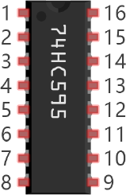

ESP32-S3 board
The brain that runs your uploaded sketch.
ESP32-S3 Lab · Day 20 of 30
Today a chip joins the crew, and it changes the deal you've been working with. On Day 6 every light cost a pin — ten lights, ten wires. The 74HC595 lets you pay in time instead: you send it the eight bits one after another down a single data wire, tick them in with a clock, then flip them all on together with a latch. Three pins, eight lights — and the flowing pattern turns out to be one bit sliding along a row.
TSK-DAY20-SHIFTREG
Hand this to an agent so it can pull the lesson packet and coach you step by step.
01 First, know the pieces
Six things, one of them a chip with sixteen legs. Tap Define on any part you haven't met — the answer opens as a field note you can read and dismiss without losing your place.
The brain that runs your uploaded sketch.

Spreads the pins into rows you can reach and label.

The chip that turns three wires into eight outputs.

The bar from Day 6 — eight of its segments light today.

One per segment to keep each LED's current gentle.

Temporary, solder-free connections — the most you've used so far.
02 Make the physical circuit
The official Freenove diagram is your chart — schematic on top, the same circuit built on a breadboard below. Click it to enlarge. The chip sits across the breadboard's centre channel, and each connection tells you where the wire goes and why.
Mind the chip's notch. The 74HC595 only works one way round — the half-moon notch at one end marks where pin 1 sits, and it must match the chart. Unplug USB before you move any wire.
03 One action at a time
This is the main path — you can finish the day without opening a single field note. Tap each step as you go to keep your place.
Seat the ESP32-S3 on the GPIO extension board and keep USB unplugged while you wire.
Straddle the 74HC595 across the breadboard's centre channel with its notch matching the chart.
Give the chip power — VCC and MR (pin 10) to 5V, GND and OE (pin 13) to ground.
Run the three control wires — GPIO 12 to DS (pin 14), GPIO 13 to ST_CP (pin 12), GPIO 14 to SH_CP (pin 11).
Connect outputs Q0–Q7 to the LED bar, with a 220 Ω resistor in series for each segment.
Check the LED bar's direction against the chart — you saw on Day 6 how easily it reverses.
Compare every wire to the chart before you plug in USB.
Open Sketch_14.1_FlowingLight02.ino in Arduino IDE and upload it.
Watch one lit LED run along the bar and back.
04 Read just enough code
The sketch keeps one byte, x, and lets its single 1 bit slide left and then right. A small helper, writeTo595, hands each new byte to the chip and latches it onto the outputs. Switch to MicroPython if you'd rather see the same idea in Python — the wiring never changes.
int latchPin = 13; // Pin connected to ST_CP of 74HC595(Pin12)
int clockPin = 14; // Pin connected to SH_CP of 74HC595(Pin11)
int dataPin = 12; // Pin connected to DS of 74HC595(Pin14)
void setup() {
// set pins to output
pinMode(latchPin, OUTPUT);
pinMode(clockPin, OUTPUT);
pinMode(dataPin, OUTPUT);
}
void loop() {
byte x = 0x01; // 0b 0000 0001
for (int j = 0; j < 8; j++) { // Let led light up from right to left
writeTo595(LSBFIRST, x);
x <<= 1;
delay(50);
}
delay(100);
x = 0x80; //0b 1000 0000
for (int j = 0; j < 8; j++) { // Let led light up from left to right
writeTo595(LSBFIRST, x);
x >>= 1;
delay(50);
}
delay(100);
}
void writeTo595(int order, byte _data ) {
// Output low level to latchPin
digitalWrite(latchPin, LOW);
// Send serial data to 74HC595
shiftOut(dataPin, clockPin, order, _data);
// Output high level to latchPin, and 74HC595 will update the data to the parallel output port.
digitalWrite(latchPin, HIGH);
}shiftOut(dataPin, clockPin, order, _data)Sends the byte to the chip one bit at a time — a level on GPIO 12 for each bit, and a clock tick on GPIO 14 to take it in. One call does all eight. digitalWrite(latchPin, HIGH)The rising edge on GPIO 13 copies all eight stored bits to the outputs in one step, so the whole pattern appears together. x <<= 1Slides the single 1 bit one place left, so the lit LED takes one step along the bar; delay(50) sets the pace. Optional side path · same circuit
import time
from my74HC595 import Chip74HC595
chip = Chip74HC595(12,13,14,-1)
while True:
x=0x01
for count in range(8):
chip.shiftOut(1,x)
x=x<<1;
time.sleep_ms(300)
x=0x01
for count in range(8):
chip.shiftOut(0,x)
x=x<<1
time.sleep_ms(300)Chip74HC595(12,13,14,-1)The module takes its pins in the order data then latch then clock — matching today's wiring — with -1 meaning OE is simply wired to ground.chip.shiftOut(1,x)Sends the byte and latches it in one call; the first argument picks which direction the pattern travels.Same wiring, same chip. Here the direction of travel comes from shiftOut's first argument — 1 one way, 0 the other — while both loops shift the byte the same way. Run it in Thonny if MicroPython is set up; otherwise skip it — it should never block the Arduino-first path.
05 Understand, don't memorise
On Day 6 the bar cost you ten pins because each LED had its own wire, all driven in parallel at the same instant. The 74HC595 makes a different bargain. It accepts the eight bits one after another down one wire, holds them inside, and reveals them together on a signal — so you spend a few microseconds of clocking and get seven pins back. Read what each of the three wires does and the moving light explains itself.
Ten parallel wires became three because the chip accepts the bits in sequence instead of all at once. You pay in time, and it costs you almost nothing the eye can see.
The data pin (DS, GPIO 12) carries a single bit at a time — HIGH for a 1, LOW for a 0. It only ever presents one bit; the value on it changes eight times to send a whole byte.
The chip is a row of eight slots. Every rising tick on the clock pin (SH_CP, GPIO 14) shoves the row one place along and drops the current data-pin level into the empty end. Eight ticks and the whole byte is inside.
While those eight ticks happen the outputs keep showing the old pattern. A rising edge on the latch pin (ST_CP, GPIO 13) copies the eight inner slots to the eight output pins in one step — which is why you never see the bits crawl in.
shiftOut(dataPin, clockPin, LSBFIRST, x) does all eight data-and-clock pairs for you. The sketch wraps it: latch LOW, shiftOut the byte, latch HIGH — send, then reveal.
x starts as 0x01, one lit slot among seven dark. x <<= 1 moves that 1 up one place, the next byte goes out, and the lit segment jumps one over. Repeat and the light walks the bar.
8 bits down 1 data wire, one per clock tick → one latch edge → 8 outputs lit together
Without it, every LED would flicker as the bits shifted through on their way to their final slot. The latch holds the outputs steady until the whole byte has arrived, then updates them together — you only ever see finished patterns.
Day 6 gave every segment its own GPIO. Here the chip holds all eight states and the board keeps just three wires. The same three can drive far more — chips chain end to end, each passing bits to the next, so three pins can run sixteen, twenty-four, or more outputs.
06 Know it worked
Nothing prints to the screen today — the proof is the light running along the bar in front of you.
Eight segments take part — the chip has eight outputs, so two segments of the ten-segment bar stay dark. That's correct.
07 Make the idea yours
Same working circuit, and the one thing that decides what the bar shows is the byte you send. Instead of watching the sketch shift a bit for you, hand the chip a byte you picked and predict the result before you upload. It fits inside today's 30 minutes.
In the first loop, replace the body with a single writeTo595(LSBFIRST, 0b10100101) and a delay(500). Before uploading, count the 1 bits — that's how many segments light — and predict which end holds bit 0. Upload to confirm, and note that LSBFIRST plus the bar's direction decide which segment is which.
Start the first loop with x = 0x03 so two neighbouring LEDs travel together. Predict what the second loop's starting value needs to be before you change it.
In the first loop, replace x <<= 1 with x = (x << 1) | 1 so each step keeps every light already lit and the bar fills from one end — the chip is holding a growing pattern for you.
08 Learn it with a hand on the tiller
Every lesson ships with a code and a machine-readable packet, so an agent can guide you with full context.
TSK-DAY20-SHIFTREG
How the agent should behave: guide one physical connection at a time and wait for confirmation, then teach the real idea — a shift register trades time for pins by clocking eight bits in one at a time and latching them out together. Explain the data, clock, and latch roles concretely, and always check wiring, board, port, and USB before changing code.
Keep your place
Mark it complete — it shows on your course map, and your place is saved on this device.